10 Ottobre 2021
Processione del Santo Rosario
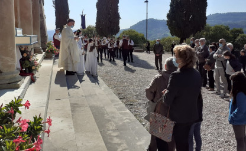
Finalmente siamo tornati a sfilare lungo le strade del nostro paese, anche se nel pieno rispetto delle norme che regolano le manifestazioni civili e religiose in ottemperanza alle norme anti Covid19.
Abbiamo accompagnato i fedeli e l'immagine della Madonna di San Sebastiano sulla strada che dalla piazza di Cornedo porta sul colle di San Sebastiano con la nostra musica.
Concerto dedicato a tutti gli
Operatori della SanitÃ
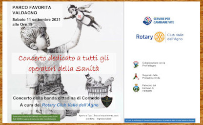
Sabato 11 Settembre alle ore 19.00
Con l'organizzazione del Rotary Club Valle dell'Agno saremo in concerto a Valdagno presso il parco La Favorita.
Il concerto è dedicato a tutti gli operatori della sanità che per 18 mesi hanno combattuto in prima linea contro la pandemia da Covid19
Inaugurazione Croce del Verlaldo
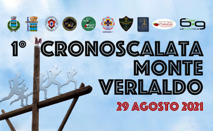
Domenica 29 Agosto alle ore 16.00 saremo presenti con un concerto sulla sommità del Monte Verlaldo in occasione dell'inaugurazione della nuova croce che domina il nostro bellissimo paese
Vi aspettiamo per trascorrere un pomeriggio di musica ed allegria
JB & SB in Concerto
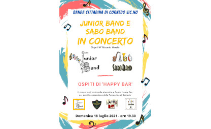
Domenica 18 luglio alle ore 19.30 venite ad ascoltare i nostri giovani che hanno tanta voglia di ricominciare a suonare
Di fianco a "Happy Bar", UN BUON APERITIVO E BUONA MUSICA!!!
Librar Cornedo
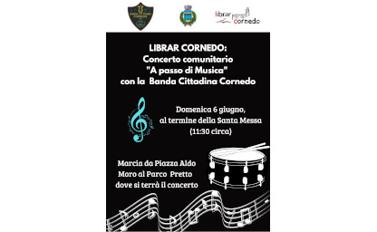
Domenica 06 Giugno 2021 Cornedo Vicentino si prepara ad accogliere la prima edizione di Librar Cornedo, un evento importante che segna la ripresa delle attività culturali per il nostro territorio, dopo l’ennesimo momento difficile superato insieme.
La Banda Cittadina di Cornedo si unisce all'amministazione comunale e partecipa a questo evento riportando la gioia della nostra musica ai cornedesi.
Carnevale 2021
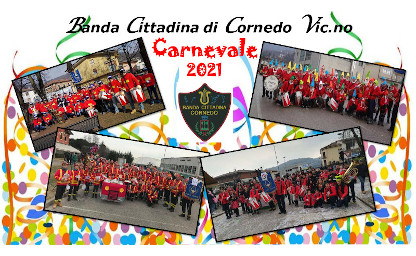
A causa dell'emergenza sanitaria quest'anno non sarà possibile festeggiare il Carnevale Cornedese.
Rinnoviamo in questo modo la nostra gioia nello sfilare nella festa mascherata che ogni anno colora le vie del nostro paese.
Buon Anno 2021
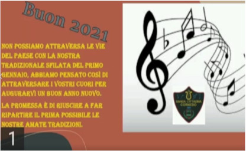
Quest'anno purtroppo non possiamo attraversare le vie del paese con la nostra tradizionale sfilata del primo gennaio. Abbiamo pensato così di attraversare i vostri cuori per augurarvi un buon 2021.
La promessa è di riuscire a far ripartire il prima possibile le nostre tradizioni
18 Ottobre 2020
Concerto per i Cornedesi

Domenica 18 ottobre siamo tornati a suonare per la cittadinanza di Cornedo!
Ci siamo esibiti in un concerto in piazza Aldo Moro a Cornedo suonando otto brani alle ore 11.15, dopo la SS. Messa domenicale.
🌈Questo breve concerto lo abbiamo fortemente voluto per dare un momento di gioia ai cornedesi in un momento nel quale tutto sembra precipitare.
Nuove regole per le prove
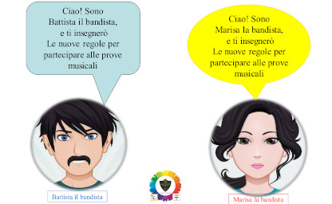
Il 18 Giugno 2020 finalmente potremmo riprendere le prove di musica presso la nostra sede. Le regole per partecipare alle prove sono cambiate. Qui troverete tutte le regole ed i consigli utili per poter proseguire la nostra attività nella massima sicurezza.
Noi restiamo a casa

Nei primi mesi del 2020, a causa del lockdown imposto per contrastare la diffusione della pandemia da coronavirus, le attività della Banda sono state tutte sospese.
Le prove sono comunque continuate in modo diverso, con l'utilizzo di "Zoom" ognuno da casa propria. Così abbiamo pensato di realizzare questo video;
un modo diverso di suonare "assieme"
A causa dell'emergenza sanitaria Covid-19 tutti i servizi, i concerti e qualsiasi titpo di manifestazione dove solitamente era presente la Banda sono stati sospesi dal 16 febbraio 2020 al 18 Ottobre 2020.
Quelli riportati di seguito sono gli ultimi quattro fatti prima del "Lockdown" nel 2020.
16 Febbraio 2020

Sfilata di carnevale di Cornedo
26 Gennaio 2020

Caminada de San Bastian
06 Gennaio 2020

Sfilata per le vie di Recoaro e visita agli ospiti della casa di riposo "Parco Fortuna" in occasione del Rogo della Stria
Primo Gennaio 2020
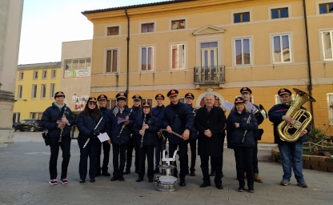
Come da tradizione non poteva certo mancare anche quest'anno il giro per le vie del paese a capodanno.
Portare gli auguri alla popolazione di Cornedo di buon mattino e visitare i nostri anziani, ospitati a "Casa Tassoni", è per noi un dovere ma prima ancora un grandissimo piacere e motivo di orgoglio.
Grazie a tutti i Cornedesi che ci vogliono bene e ci sostengono
Ciao Guido
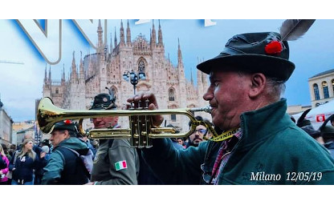
Non dimenticheremo mai il tuo sorriso e la tua gioia, la tua forza e la tua voglia di musica... Innumerevoli concerti, servizi musicali, adunate...
Non mancavi mai con la tua fidata tromba, con il tuo passo solo apparentemente zoppicante.
Ciao Guido, da lassù suona ancora per noi e poi regalaci il tuo ...oh!oh!oh!
Il primo volume sulla storia della Banda Cittadina di Cornedo
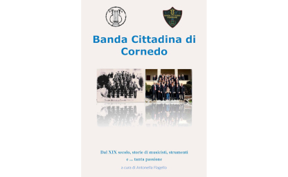
In occasione della festa di Santa Cecilia del 2018 è stato pubblicato il primo volume della storia della Banda. Il libro curato da Antonella Flagello ed arricchito da molte foto è uno spaccato di storia popolare del nostro paese, dove la banda è una presenza protagonista.
Il CD per un amico

Alle 09.00 tutti erano pronti nel massimo silenzio, con la tensione alle stelle per soffiare negli strumenti quella prima nota che sarebbe rimasta in eterno impressa su un disco e soprattutto nella memoria di ogni partecipante.